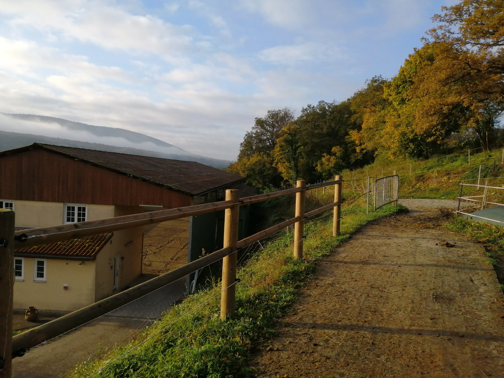

Les Écuries du Flecken
Wanderreiten & Pferdepension im Elsass
Willkommen auf unserem Hof
In Lembach, inmitten der grünen Berge der Nordvogesen, liegt unser familiärer Betrieb von beschaulicher Größe, der seinen Besuchern vor allem Ruhe bietet. Umgeben von der Schönheit der weiten Landschaft lässt es sich mit seinem vierhufigen Begleiter hervorragend entspannen. Das Wohlbefinden Ihres Pferdes liegt uns sehr am Herzen und hat oberste Priorität.
Wanderreiten
Gelegen im Herzen des UNESCO-Biosphärenreservats Pfälzerwald-Nordvogesen ist unser mit dem „Centre de Tourisme Équestre“-Label ausgezeichneter Hof Ausgangspunkt für viele Wandertouren. Fragen Sie uns bei der Planung Ihres Wanderritts gerne um Rat!
Mehr erfahrenPferdepension
Für Pferde, Ponies, Jungpferde, Fohlen, Zuchtstuten, Rentner… Wir passen uns den Bedürfnissen Ihres Gefährten an. Unser Ziel? Im Gespräch gemeinsam die beste Lösung zu finden!
Mehr erfahrenZucht
Unsere Leidenschaft leben wir auch in der Zucht. Im Frühling 2022 erwarten wir unser erstes Quarter Horse Fohlen.
Auf einem Umweg über die Weide können Sie außerdem unsere Vogeser Kühe bewundern. Unsere Wiederkäuer helfen uns beim Instandhalten der Wiese und tragen so zu einer höheren Biodiversität bei.

Box
Ställe
Lichtdurchflutete Halle
Mehrere Hektar hügeliger Weiden
Heu aus eigener Produktion

Laufstall
- 
Offenstall
Kutsche
Wanderreiten
Unser Hof ist eine Zwischenetappe auf dem Rundweg “Zwischen Elsass und Mosel”. Entdecken und bewundern Sie die Ruinen alter Schlösser, zu Pferd auf Wegen wo sich in der Schönheit der Natur eine märchenhafte Welt verbirgt.
Hélène und Sylvain sind Ansprechpartner für den vom CRTE Grand-Est und CDTE du Bas-Rhin gestalteten Rundweg.
Unterbringung und Verpflegung (Box oder Paddock- Heu, Wasser und 1l Kraftfutter) 15€/Pferd/Nacht.
Unsere Ferienwohnung steht derzeit leider nicht zur Verfügung, in Lembach laden jedoch zahlreiche Hotels und Ferienwohnungen zur Übernachtung ein. Wir arbeiten derzeit daran bald auch Gäste in unserem Hof beherbergen zu dürfen.
Bis dahin besteht die Möglichkeit auf unserem Gelände zu zelten. Für größere Gruppen organisieren wir gerne auch Themenabende.
Pension
Für Pferde und Ponies, ab 280€ / Monat.
Verschiedene Unterbringungsmöglichkeiten
- In der Box (von mindestens 3,5m x 4m bis 5m x5m)
- Im Laufstall auf Späne mit Heunetz
- Im Offenstall
Wir leisten:
Heu morgens und abends (von unseren Wiesen)
- Fütterung mit 1l gequetschter Gerste (oder Futter der Marke St Hippolyt zum vergünstigten Preis) Fütterung von eigenem Futter ist kostenlos. Mineral-und Vitaminfutter werden vom Besitzer selbst besorgt (eine Gruppenbestellung bei Reverdy ist möglich)
- Salzlecksteine zur freien Verfügung
- Frostsichere Tränken
- Persönlicher Spind
- Zugang zur lichtdurchfluteten Reithalle mit Stangen und anderem Bodenarbeitszubehör
- Zugang zu Reitwegen im Wald (Ausweis für den Zugang zum Wald)
- Täglicher Auslauf im Winter
Alle Pferde haben Zugang zu den Weiden um ein artgerechtes Leben führen zu können.
Wir bieten unseren Pensionspferden mindestens 6 Monate Herdenhaltung auf der Weide im Jahr. Jedes neue Pferd wird langsam in die bestehende Herde integriert. Für Pferde mit körperlichen Problemen (Lahmheit, Übergewicht, Hufrehe...) besteht die Möglichkeit auf begrenzten Weidezugang in einer passenden Herde.
Pension für Rentnerpferde oder Fohlen / Jungpferde
Möchten Sie Ihren vierbeinigen Freund während seiner Rente in guten Händen wissen? Oder möchten Sie, dass ihr Fohlen / Jungpferd mit seinen Artgenossen in der Herde aufwächst? Wir setzen für Ihr Tier unser ganzes Savoir Faire ein und geben ihm genau das was es braucht.
Wir bieten:
- Wurmkur 2 mal im Jahr
- Heu nach Belieben (in Heunetzen, um die Mahlzeit auf den Tag zu verteilen)
- Mineral- und Vitaminfutter oder eine speziell an die Bedürfnisse des Pferdes (Alter, Körperbau...) angepasste Ernährung mit Futtermitteln von St Hippolyt
- Ausschneiden der Hufe bis zu acht mal im Jahr
- Wöchentliche Körperpflege (Bürsten, Hufe auskratzen...)
- Tierärztliche Versorgung
- Arbeit mit dem Fohlen oder Jungpferd (Desensibilisierung durch positive Verstärkung) Bodenarbeit nach Bedarf, z.B. Verladetraining
- Wöchentlich Neuigkeiten in Form von Videos und Fotos
- Unterbringung im Offenstall mit Zugang zur Koppel. Leben in der Herde.
Pension für trächtige Stuten -Abfohlüberwachung
Um die Ankunft eine Fohlens in aller Ruhe vorzubereiten, begleiten und überwachen wir trächtige Stuten und gewährleisten so die nötige Pflege. Und das bis zum Abfohlen und späteren Absetzen des Fohlens.
Über Uns
Im Dezember 2019 haben Hélène und Sylvain die Écuries du Flecken übernommen. Seitdem wurden bereits einige Verbesserungen vorgenommen und viele neue Projekte stehen noch an. Das bis dahin bestehende System der permanenten Einstreu wurde eingstellt, die Stallungen neu durchdacht und ein neuer Offenstall kam dazu. Vor Kurzem wurde der Hallenboden gänzlich erneuert.
Wir erneuern und entwickeln uns stetig weiter, um den Alltag unserer Einsteller immer noch ein bisschen besser zu gestalten!
Wir sind seit unserer Kindheit leidenschaftliche Reiter und halten seit vielen Jahren auch selbst Pferde. Seither bilden wir uns stetig weiter: Hélène hat die Berufslizenz zur Pferdewirtin („Management et Gestion des entreprises de la filière équine“) und den Galop 7. Sylvain hat den Galop 5 im Fahren und absolviert zur Zeit seine Ausbildung zum Wanderrittführer. Während diverser Praktika im professionellen Bereich haben wir unser Savoir-faire verfeinert, wie z.B. im Zuchtbetrieb des Haras de Hus und beim Horsemanship-Lehrgang bei Andy Booth.
In unserer Jugend haben wir unser Können auf Spring- und Vielseitigkeitsturnieren sowie Orientierungsritten gemessen, im Herzen sind wir aber Wanderreiter.
Unsere Freude an Pferden und unsere Liebe zur Natur möchten wir mit Ihnen teilen und hoch zu Ross die Gegend entdecken und die traumhaften Landschaften der Nordvogesen genießen.